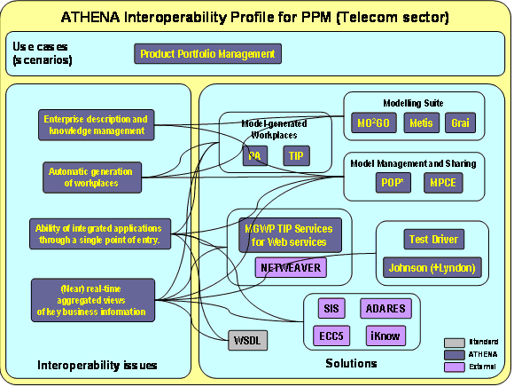

")

Product portfolio management (PPM) profile
Product portfolio management (PPM) pilot
The pilot focuses Product Portfolio Management and product data sharing among key actors inside a telecom company. Charged with the task of selecting the right products and product variants to produce products for a dynamic market and customer base, the company must find new ways of managing product design and engineering, and supporting customer communications. The pilot is implemented using a Model-configured, User-composed Platform and Services (MUPS) architecture to design a service layer with roles, views and model-generated workplaces and services, focusing the needs of the product manager.
The following ATHENA results and tools were used to deal with the identified interoperability issues and problems as shown in the figure below:
- POP* for modelling the different aspects of the enterprise and generating the workplace through the models.
- Import/export of POP* for modelling different aspects of the enterprise.
- MPCE for modelling different aspects of the enterprise.
- Transform ITM and BPM models to MEAF models for modelling different aspects of the enterprise.
- MEAF ATHENA extensions to facilitate Web services, task management, user interface modelling.
- In the generation of MGWP the following tools were used
- MO2GO for the Process Assistant (PA)
- Metis for the Troux Internet Portal (TIP)
- TIP services for Web services for discovery of Web services and linking them to the models.
- Johnson (and Lyndon) for design, testing and deployment of services.
- Test Driver for testing services conformance and integrity.
